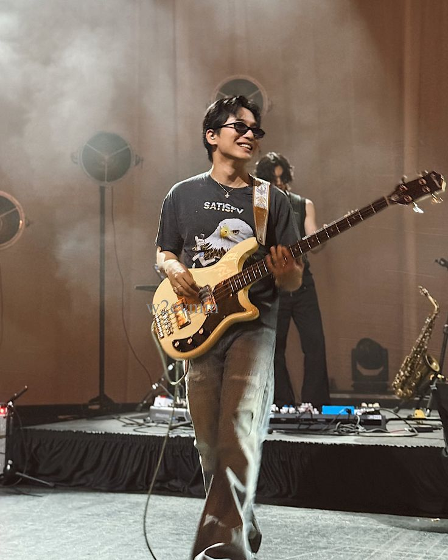
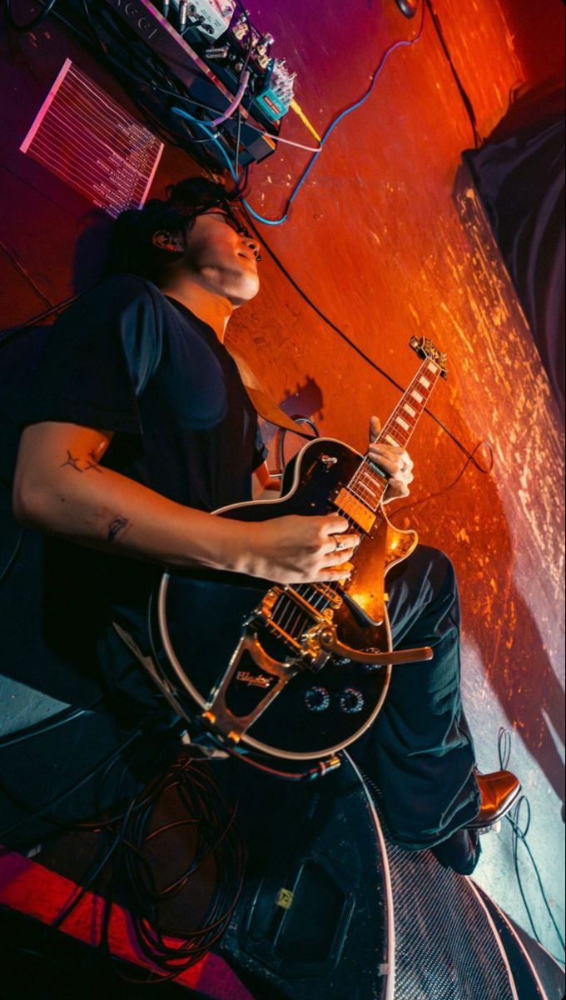
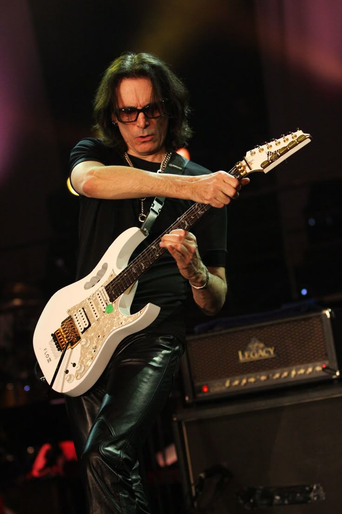
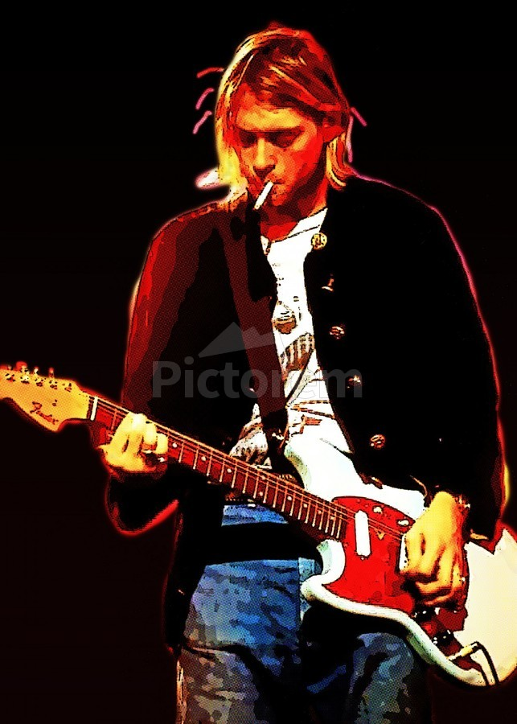

seja a estrela do seu show!

Kim Daniel é um cantor/compositor/guitarrista de musicas indie/jazz coreana

Kim Daniel é criador das bandas Wave To Earth e The Poles.
Tim Henson é guitarrista da banda Polyphia, reconhecido como um dos maiores guitarristas do mundo.
Tim Henson mistura math rock, jazz, hip-hop e pop em suas composições.

Steve Vai é um guitarrista de grande renome, conhecido pelo "Joint Shifting".

Kurt Cobain mudou como as pessoas veem o rock grunge e alternativo.